Объекты
Одноразовые источники ресурсов
| 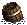 | Морская бочка |
|---|---|
|
-20% шанс не получить ничего; -80% шанс получить 3-6 ртути, серы, кристаллов или драг. камней. типы местности: вода | |
 |
Потерянный груз |
|
-25% шанс не получить ничего; -25% шанс получить 5 руды; -25% шанс получить 5 руды и 200 золота; -25% шанс получить 10 руды и 500 золота. типы местности: вода | |
| Морской сундук | |
|
-20% шанс не получить ничего; -70% шанс получить 1500 золота; -10% шанс получить 1500 золота и 1 случайный артефакт-сокровище. типы местности: вода | |
| Склянка маны | |
|
+30-60 маны (часть маны, превышающая стандартный максимум для героя,
дается в половинном объеме). типы местности: вода |
Склады
Склады - новый тип объектов, который один раз в неделю при посещении приносит определенное количество ресурсов.| Склад древесины | |
|---|---|
| Приносит 10 единиц древесины раз в неделю. типы местности: любая суша | |
| Склад руды | |
| Приносит 10 единиц руды раз в неделю. типы местности: любая суша | |
| Склад ртути | |
| Приносит 6 единиц ртути раз в неделю. типы местности: любая суша | |
| Склад серы | |
| Приносит 6 единиц серы раз в неделю. типы местности: любая суша | |
 |
Склад кристаллов |
| Приносит 6 кристаллов раз в неделю. типы местности: любая суша | |
| 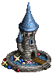 | Склад изумрудов |
| Приносит 6 изумрудов раз в неделю. типы местности: любая суша |
Обучающие объекты
Банки и консерватории
В игру было добавлено множество различных банков и консерваторий. В банках герой сражается с охраной и в награду получает ресурсы и артефакты, а в консерваториях герой получает в награду дополнительных существ.Банки
Консерватории
| Застава налетчиков | |
|---|---|
|
шанс: 30/30/30/10% охрана: 50/75/100/150 налетчиков награда: 4/6/8/12 циклопов типы местности: любая суша | |
| 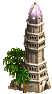 | Башня из слоновой кости (искл. из ГСК) |
|
шанс: 30/30/30/10% охрана: 35/50/65/80 архимагов награда: 3/6/9/12 чародеев типы местности: любая суша | |
| 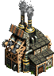 | Опытный цех |
|
шанс: 30/30/30/10% охрана: 25/50/75/100 стальных големов награда: 1/2/3/4 гиганта типы местности: любая суша | |
| 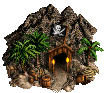 | Пиратская пещера (искл. из ГСК) |
|
шанс: 30/30/30/10% охрана: 20/40/60/80 пиратов и 20/40/60/80 корсаров награда: 1/2/3/4 морских змеев типы местности: любая суша | |
| Алая башня | |
|
шанс: 30/30/30/10% охрана: 35/70/105/140 огненных элементалей награда: 1/2/3/4 огненные птицы типы местности: любая суша |
Прочие объекты
| 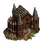 | Форт на холме (новый) |
|---|---|
| Позволяет улучшать существ 1-5 уровня за двойную цену.
типы местности: любая суша | |
| Пушечный двор | |
| Позволяет приобрести пушку.
типы местности: любая суша | |
| 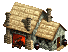 | Фабрика военной техники |
| Позволяет приобрести любую из трех военных машин: баллиста, палатка первой помощи и подвод с боеприпасами.
типы местности: любая суша | |
| 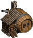 | Винодельня |
| Позволяет нанимать сатиров.
типы местности: любая суша | |
| 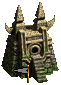 | Зиккурат |
| Позволяет нанимать фангармов.
типы местности: любая суша | |
| Трактир | |
| Позволяет нанимать лепреконов.
типы местности: любая суша | |
| 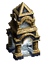 | Храм лояльности |
| Устраняет падение боевого духа из-за наличия существ различных фракций
в армии героя до следующего хода.
типы местности: любая суша | |
| Городские врата | |
| Позволяет герою телепортироваться в любой дружественный город.
типы местности: любая суша | |
| Преобразователь скелетов | |
| Позволяет преобразовать всех существ в скелетов,
за исключением драконов, гидр и морских змеев - они преобразуются в костяных драконов.
типы местности: подземелье | |
| Водопой | |
| При посещении герой теряет все оставшиеся очки передвижения, но получает +1000
очков передвижения на следующий день.
типы местности: камни | |
| 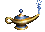 | Древняя лампа |
| Позволяет 1 раз нанять 4-7 верховных джиннов.
типы местности: снег, песок | |
| 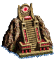 | Алтарь маны |
| Герои могут приносить в жертву существ для получения маны вплоть до
учетверенного стандартного максимума.
типы местности: вода | |
| Фонтан молодости | |
| Дает +1 к боевому духу до следующего сражения и +400 к очкам передвижения до следующего дня.
типы местности: вода | |
| Обсерватория | |
| Дает +2 к радиусу разведки до конца недели.
типы местности: вода | |
| Старьевщик | |
| Старьевщику можно продавать артефакты за половину номинальной цены (свитки заклинаний продавать нельзя).
типы местности: высокогорье | |
| Лачуга отшельника | |
| Улучшает случайный вторичный навык героя.
типы местности: высокогорье | |
| Минеральный источник | |
| Дает +1 к удаче до следующего сражения и +600 к очкам передвижения до конца дня.
типы местности: высокогорье | |
| Проводник | |
| Уменьшает штраф передвижения по пустошам на 50% до конца недели (итоговая цена передвижения 75%).
типы местности: пустоши | |
| Лаборатория чернокнижника | |
| Позволяет преобразовывать ртуть, серу, кристаллы и драгоценные камни друг в друга в соотношении 1 к 1.
типы местности: снег, пустоши | |
| Скважина | |
| Приносит 500 золота в первую неделю и 1000 золота в любую другую.
типы местности: пустоши | |
| Старатель | |
| Приносит 500 золота или 5 серы каждую неделю.
типы местности: пустоши | |
| Могила | |
| Раскопки приносят 500–5000 золота, случайный артефакт-сокровище или малый артефакт и -3 к боевому духу до следующего боя.
типы местности: пустоши |